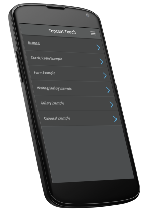

The Lean Mobile Framework
- Designed from the ground up to build mobile apps on Phonegap, of course you can build online app's as well
- Open Source under the MIT License, fork it on Github
- Modular, include only the libraries you need
- Lightweight (an entire application including CSS and html can be as little as 125K minified)
- Near native performance on Android and IOS
- Simple codebase that easy to understand to use and simple to extend.
- Leverages best of breed components and libraries
- Get started quickly with Yeoman generators
Built on proven Technologies
Topcoat touch uses the Topcoat CSS framework for creating mobile widgets in CSS
without any need for slow Javascript enhancement. Then it optionally allows addition of a collection of best of
breed libraries to allow for almost all of the functionality of heavier libraries:
- jQuery or Zepto to provide DOM manipulation.
- fastclick is an optional plugin to remove the 300ms click delay in most mobile browsers
- iScroll is an optional plugin that can be used to provide smooth scrolling automatically.
- hammer.js is an optional plugin to allow TopcoatTouch to provide event brokering for mobile touch options (swipe, tap, hold, doubletap, drag, roate, pinch, etc).
- lodash is a plugin that is only required when using templating strategy, of course you could also use underscore.
- Currently the default templating engine for the MVC style is underscore, but you can easily use Handlebars or Mustache. See tips and tricks for a simple example using Handlebars or Mustache. There is also an example using handlerbars. Or you can also easily add your own templating engines following these examples.
Rapid Development
Quickly generate a working app with our
generator for
Yeoman. It allows for rapid initial creation of your project,
selection of which libraries you wish to use, as well as integration with phonegap/cordova and grunt.
How to get Started
- Getting Started -- Read our guide to getting started with topcoat touch.
- Wiki - Browse the Wiki for more detailed documentation.
- Faq - Small Faq for now, but will expand over time.
- MVC Example App - Check out the MVC example app in the source code to see how to create an MVC Topcoat Touch App
- Single Document Example App - Examine the Single Document App if you are going to create a small app and want to keep things as simple as possible.